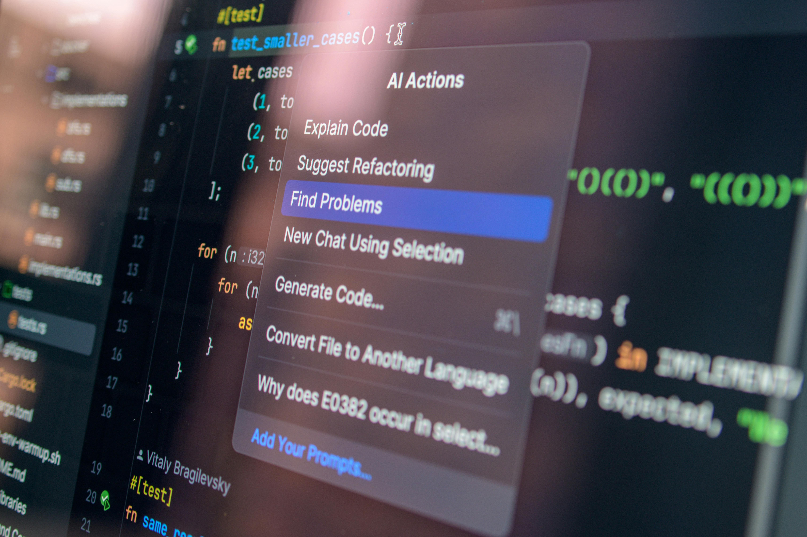

Lecturas Recientes
Inteligencia Artificial y
Ética Digital
- ¿Qué es la IA y cómo impacta la vida universitaria?
- Uso ético y responsable de la IA
La inteligencia artificial (IA) es un conjunto de tecnologías que permiten a las máquinas realizar tareas
que normalmente requieren inteligencia humana, como el reconocimiento del lenguaje, la toma de
decisiones, el análisis de datos y la generación de contenido. En los últimos años, su integración en la
vida cotidiana y en los entornos educativos ha crecido de manera acelerada, transformando la forma en
que aprendemos, trabajamos y nos relacionamos.
Al integrarse en diversas áreas del conocimiento y la práctica, la IA plantea desafíos éticos
significativos que requieren una atención cuidadosa para garantizar un uso responsable y beneficioso de
estas tecnologías. Para los estudiantes universitarios, esto implica no solo aprender a usarlas, sino
también desarrollar una comprensión crítica de sus implicaciones en términos de privacidad, veracidad,
autoría y equidad.
La expansión del uso de algoritmos e inteligencia artificial en las universidades ha generado
oportunidades para mejorar la eficiencia institucional y personalizar el aprendizaje, pero también ha
intensificado desafíos éticos y organizacionales que las instituciones apenas comienzan a abordar con
políticas claras.
¿Qué es la IA y cómo impacta la vida universitaria?
La inteligencia artificial ha revolucionado la educación superior al permitir la creación de sistemas de
aprendizaje adaptativos que se ajustan a las necesidades individuales de los estudiantes, facilitando un
proceso de aprendizaje más personalizado y efectivo. Herramientas basadas en IA ofrecen nuevas
estrategias para la enseñanza, la evaluación y la retroalimentación, promoviendo metodologías activas,
automatización de tareas administrativas, seguimiento personalizado del progreso académico y mejoras en
la comunicación entre estudiantes y docentes.
En el contexto universitario actual, el uso de la IA entre los estudiantes es masivo. El 89% de los
estudiantes universitarios emplea alguna herramienta de IA generativa, especialmente aquellas que
resuelven consultas y generan conversaciones. Sus principales usos incluyen resolver dudas o problemas
específicos, investigar y analizar datos, y redactar trabajos académicos. Sin embargo, solo el 34% de
los estudiantes ha recibido formación específica por parte de su universidad para aprender a usar estas
herramientas de manera adecuada y ética.
Este escenario revela una brecha importante: los estudiantes usan masivamente la IA, pero con escasa
formación sobre sus límites, riesgos y responsabilidades. Cuanto más uso hacen los estudiantes de la IA
para producir sus trabajos, más difícil resulta precisar la autoría real y la fiabilidad del proceso
evaluativo, lo que pone en cuestión la integridad académica y exige nuevos marcos de convivencia con
estas tecnologías.
https://www.pexels.com/photo/an-artist-s-illustration-of-artificial-intelligence-ai-this-illustration-depicts-language-models-which-generate-text-it-was-created-by-wes-cockx-as-part-of-the-visualising-ai-project-l-18069696/
Uso ético y responsable de la IA
El uso ético de la inteligencia artificial implica que los estudiantes y profesionales desarrollen una
relación transparente, crítica y consciente con estas herramientas. La investigación reciente sobre este
tema identifica varias dimensiones fundamentales que deben guiar ese uso.
En primer lugar, la transparencia y la honestidad académica: declarar cuándo y cómo se ha utilizado la
IA en la elaboración de un trabajo es una práctica ética básica. Utilizar estas herramientas para
reemplazar el pensamiento propio sin reconocerlo constituye una forma de deshonestidad intelectual que,
además, limita el desarrollo de las competencias del propio estudiante.
En segundo lugar, la protección de datos personales: al interactuar con plataformas de IA, los usuarios
comparten información que puede ser almacenada, procesada o utilizada con fines que no siempre son
transparentes. Es responsabilidad del usuario informarse sobre las políticas de privacidad de las
herramientas que utiliza y evitar compartir datos sensibles en estos entornos.
En tercer lugar, el pensamiento crítico frente a los resultados: la IA puede generar información
incorrecta, sesgada o desactualizada con aparente autoridad. Verificar siempre las fuentes, contrastar
la información con fuentes académicas confiables y no asumir que todo lo que produce una IA es verdadero
son hábitos esenciales para un uso responsable.
Finalmente, la formación continua en ética aplicada a la IA es una responsabilidad compartida entre
estudiantes, docentes e instituciones. Existe un consenso creciente sobre la necesidad de integrar la
ética en los programas universitarios, de manera que los futuros profesionales desarrollen no solo
competencias técnicas, sino también la capacidad de tomar decisiones responsables en entornos donde la
inteligencia artificial tenga un papel relevante.

https://www.pexels.com/photo/ai-assisted-code-debugging-on-screen-display-34804018/
Quiz
1. ¿Qué es la inteligencia artificial?
2. Según los datos más recientes, ¿qué porcentaje de estudiantes universitarios usa herramientas de IA generativa?
3. ¿Cuál de las siguientes describe mejor el uso ético de la IA en contextos académicos?
4. ¿Qué riesgo representa el uso de IA sin pensamiento crítico?